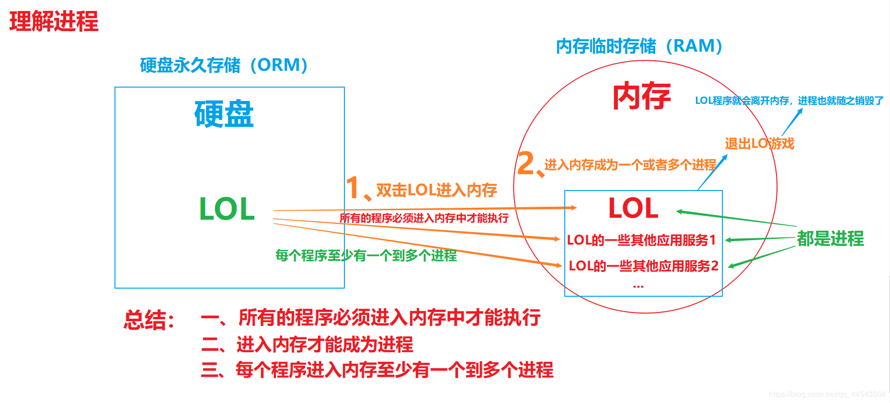
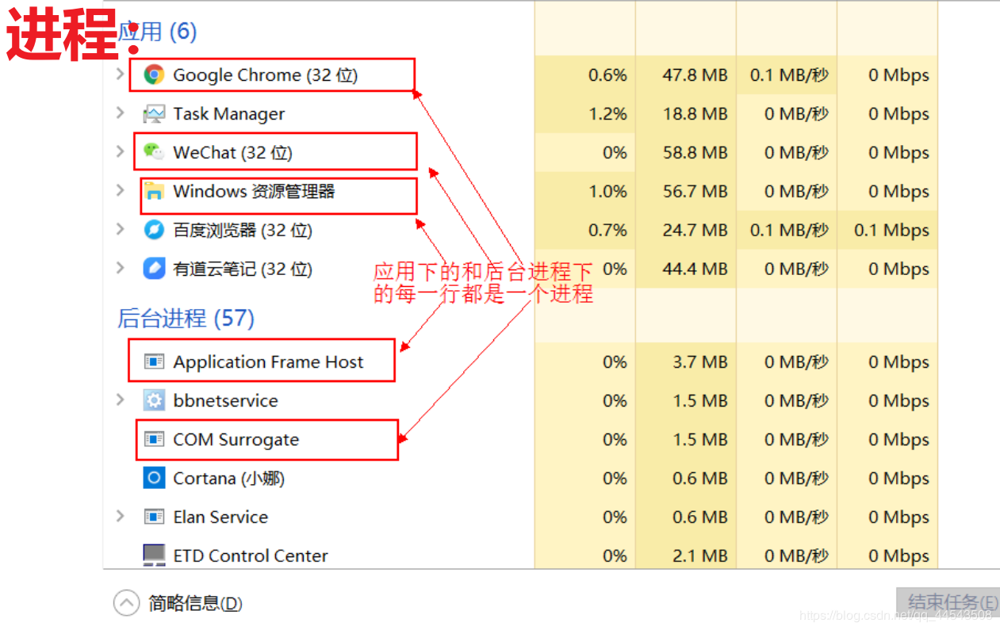
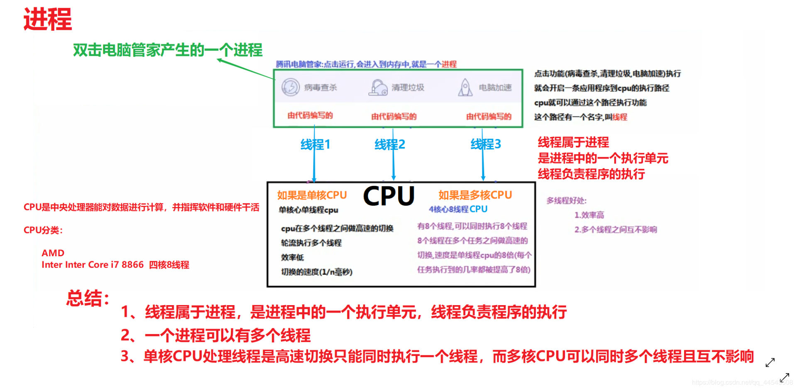
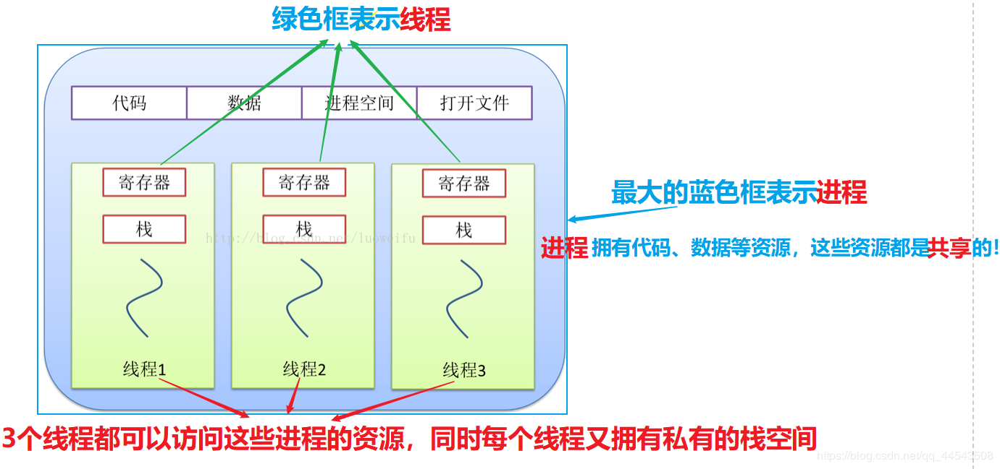
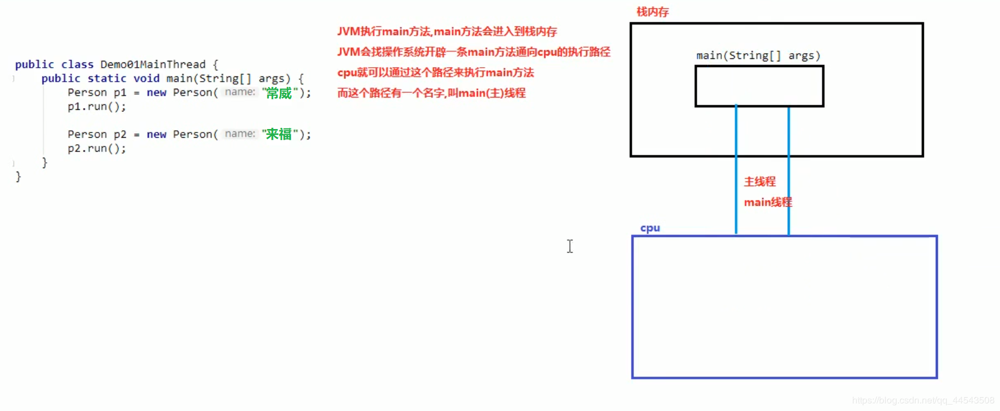
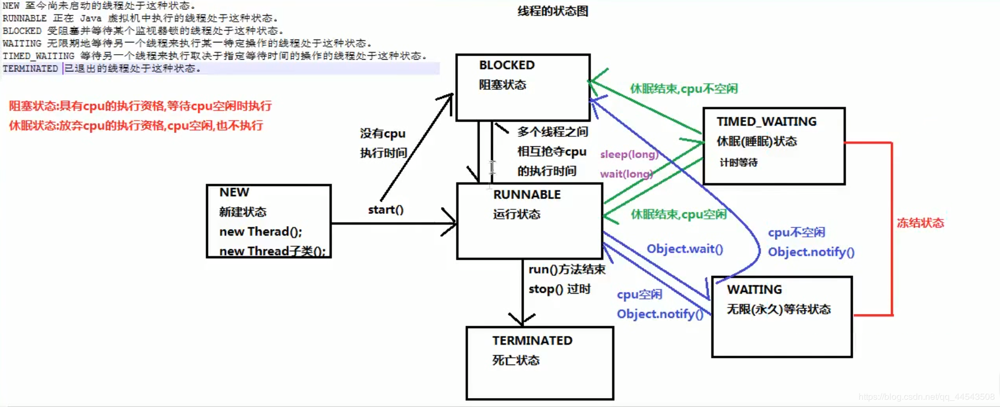

原文连接:https://www.cnblogs.com/yichunguo/p/11900373.html
目录
- 1. 理解线程与进程
- 2、理解并行和并发
- 3、特殊的一个单线程：主线程（Main线程）
- 4、 创建多线程的四种方式
- 5、使用匿名内部类方式创建线程
- 6、线程安全问题
- 7、解决线程安全问题：线程同步
- 8、线程常用方法
- 9、线程的状态
- 10、线程池
就在前几天，有位读者朋友私信宜春，说期待出一篇多线程的文章，我当时内心是小鹿乱撞啊....于是这几天茶不思饭不想，好几天深夜皆是辗转反侧，两目深凝，以至于这几天走起路来格外飘飘然，左摇右晃的，魔鬼般的步伐，一般两步，走在大马路中央上差点被打~我承认太夸张了，感觉又要被打~。最终还是君意不可违，答应了这位读者朋友，从这位读者朋友的博客头像可以看的出来，这位朋友绝bi历经沧桑，对生活无尽的坦然浩对，看透俗世凡尘、世态炎凉、趋炎附势，拥有着极高的安心恬荡情怀...啥？啥子？这个是系统默认头像....嗯嗯嗯呃。。。那个那个宜春啥都没说哈，别把什么事都扯宜春身上，你们一天天的，我啥都没说（理直气壮）...
@
1. 理解线程与进程
由于并发肯定涉及到多线程，因此在进入并发编程主题之前，我们先来了解一下进程和线程的由来，这对后面对并发编程的理解将会有很大的帮助。
进程和线程的对比这一知识点由于过于基础，正因为过于基础，所以我们更应该透彻它！我们必须掌握什么是线程和进程，掌握线程与进程的关系、区别及优缺点 ！
1.1、何为进程？
首先我们来看一下进程的概念：
进程：是指一个内存中运行的应用程序，每个进程都有一个独立的内存空间，一个应用程序可以同时运行多个进程；进程也是程序的一次执行过程，是系统运行程序的基本单位；系统运行一个程序即是一个进程从创建、运行到消亡的过程。
看完之后，是不是感觉很抽象？很懵bi？懵bi就对了，说明你和我智商一样高....~开个玩笑~
不妨先憋弃上面的概念，放松一下大脑，双击打开LOL，秒选德马打野，输了直接退出游戏并且保持微笑，然后正襟危坐心平气和的看宜春写的博客....
这个时候的你不仅仅是愉快的撸了一把游戏，而且还亲自体验撸了一把进程...其实在你双击打开LOL的时候就已经创建了进程，此话怎讲？众所周知，我们的电脑安装的软件比如：LOL、微信、谷歌等等都是存储在我们的硬盘上的，硬盘上的数据可以说是永久存储（ORM）,当我们双击LOL的时候，LOL程序执行就进入了内存中，所有的程序必须进入内存中才能执行，内存属于临时存储（RAM），而进入内存的程序都可以叫做是进程，把LOL程序退出的时候，LOL程序就会退出内存，进程也就随之销毁了！因此说各位撸了一把进程也不为过吧。
啥？字太多了，看的不够明了，不如看图得劲....额。。。

上面主要是通过抽象的描述了进程，其实进程是可以很直观的看的到的，我们可以再电脑底部任务栏，右键----->打开任务管理器,可以查看当前任务的进程：

其实，关于线程博主我完全可以一两句话概括，但是这样并不负责，毕竟这篇文章标题就是要让你彻底入门java多线程。如果连进程都理解不好谈何彻底理解多线程？
1.2、何为线程？
同样的，我们先来看线程的概念
线程是进程中的一个执行单位，负责当前进程中程序的执行。一个进程中至少有一个线程，也就是说一个进程可以有多个线程的，而多个线程的进程运用程序就叫做多线程程序
线程的概念稍微好理解很多，但是想更深层次的去理解光靠上面一段文字的概述是完全不够的！
这不打LOL的过程中，属实卡的一批，果然花高价998买的6手戴尔笔记本打LOL属实像极了爱情。这个时候不得不双击打开电脑安全管家进行杀毒，果然2500天没有进行过病毒查杀，我天。。。其实我相信很多人都用过电脑管家或者手机管家之类的安全软件，我们都很清楚我们开启病毒查杀之后一般要几分钟扫描查杀，这个时候我们是可以让它后台进行的，我们不会等而是开启另一个垃圾清理的功能，这个时候我们也不会等而是再去启动电脑加速功能。等到 这些操作都完成之后果断退出电脑管家，继续LOL，果然高价998买的6手戴尔笔记本再怎么杀毒打LOL还是照样的卡....
其实清楚线程必然涉及到CPU的相关概念了，将上面文字所描述的用图片概括，大致为：


1.3、何为多线程？
从上一节中，我们也提到过多线程，所以理解起来应该不难。
多线程就是多个线程同时运行 或 交替运行。
单核CPU：交替运行。
多核CPU：同时运行。
其实，多线程程序并不能提高程序的运行速度，但能够提高程序运行效率，让CPU的使用率更高。
1.4、何为线程调度优先级？
说起线程调度优先级这个概念，就让我想到现在我们大部分人投简历一样。如果你的学历或者工作经验越高，那么你的优先级就越高，面试官很大几率就会让你去面试但也不是一定只是几率特别大，如果线程的优先级相同，那么会随机选择一个(线程随机性)！在我们每个人的电脑中线程是可以设置线程的优先级的，但是生活中没有优先级（学历、工作经验）的孩子就只能靠自己的能力了~妈耶，太真实了...~
线程优先级具有继承特性比如A线程启动B线程，则B线程的优先级和A是一样的。
线程优先级具有随机性也就是说线程优先级高的不一定每一次都先执行完，只是被执行的可能性更大。
在今后的多线程学习旅游中我们会使用到getPriority()方法获取线程的优先级。
1.5、为什么提倡使用多线程而不是多进程？
线程与进程相似，但线程是一个比进程更小的执行单位，是程序执行的最小单位。一个进程在其执行的过程中可以产生多个线程。与进程不同的是同类的多个线程共享同一块内存空间和一组系统资源，所以系统在产生一个线程，或是在各个线程之间作切换工作时，负担要比进程小得多，也正因为如此，线程也被称为轻量级进程。同时线程是程序执行的最小单位。使用多线程而不是用多进程去进行并发程序的设计，是因为线程间的切换和调度的成本远远小于进程。
而使用多线程，多线程会将程序运行方式从串行运行变为并发运行，效率会有很大提高。
2、理解并行和并发
在博主认为并发和并行是两个非常容易被混淆的概念。为了防止绕晕大家，所以我选择长话短说！
- 并发：一个
时间段内同时发生（并不是同时发生）。 - 并行：同一
时刻发生（真正的同时发生）。
它们都可以表示两个或者多个任务一起执行，但是偏重点有些不同。
于此同时，我们不妨回顾一下上面所提到过的CPU，并再次理解并发与并行的区别，从而温故知新 ~我TM简直是个天才！~
单核CPU：交替运行【并发】
多核CPU：同时运行【并行】
并发给人的感觉是同时运行，那是因为分时交替运行的时间是非常短的！
3、特殊的一个单线程：主线程（Main线程）
我们常说的主线程就是Main线程，它是一个特殊的单线程，话不多说，直接撸码：
定义一个用于测试的demo类Person
package demo;
public class Person {
public String name;
public Person(String name){
this.name=name;
}
public void run(){
int i=1;
while (i<5){
System.out.println(name+i);
i++;
}
}
public String getName() {
return name;
}
public void setName(String name) {
this.name = name;
}
}编写Main方法
package demo;
public class MainThreadDemo {
public static void main(String[] args) {
Person per=new Person("常威");
per.run();
Person Per2=new Person("来福");
Per2.run();
}
}运行结果就已经很显而易见了，放心我不是靠你们运行结果而是单纯的先分析主线程。
运行结果：
常威1
常威2
常威3
常威4
来福1
来福2
来福3
来福43.1、分析主线程原理

3.2、 单线程的局限性
单线程不仅效率低下，而且存在很大的局限性，惟一的优点就是安全。所以说女孩子长得安全其实也是一种优点，噗哈哈哈...
如何体现出单线程效率低下以及它的局限性呢？其实只要一句代码即可，还是以上面的单线程Main线程为例：
package demo;
public class MainThreadDemo {
public static void main(String[] args) {
Person per=new Person("常威");
per.run();
int a=6/0; //=====================特别注意这行代码
Person Per2=new Person("来福");
Per2.run();
}
}试想一下运行结果...

如果对上面的运行结果有问题，或者疑问。那没错了，你简直是个天（小）才（白）！真真的天（小）才（白），很有可能异常机制没学好，好吧我给你贴出来：【java基础之异常】死了都要try，不淋漓尽致地catch我不痛快！
言归正传，效率低下何以见得？这是数据少，如果是一亿条数据呢，单线程就是一个一个打印。那局限性又何以见得呢？从上面运行结果来看也能看出，只因为一行代码而导致下面代码不再执行。已经很明显了。
4、 创建多线程的四种方式
说是说创建多线程有四种方式，但考虑到是入门文章还是主要写入门的两种方式，剩下的两个暂时忽略。忽略的两种方法有：实现Callable接口通过FutureTask包装器来创建Thread线程、使用ExecutorService、Callable、Future实现有返回结果的线程。现在可能对于入门的童鞋来说是接收不了的，以后再去了解也不晚！
4.1、继承Thread类
Java使用java.lang.Thread类代表线程，所有的线程对象都必须是Thread类或其子类的实例。每个线程的作用是完成一定的任务，实际上就是执行一段程序流即一段顺序执行的代码。Java使用线程执行体来代表这段程序流。
Java中通过继承Thread类来创建并启动多线程的步骤如下：
- 定义
Thread类的子类，并重写该类的run()方法，该run()方法的方法体就代表了线程需要完成的任务,因此把run()方法称为线程执行体。 - 创建
Thread子类的实例，即创建了线程对象 - 调用线程对象的
start()方法来启动该线程
代码如下：
测试类：
public class Demo01 {
public static void main(String[] args) {
//创建自定义线程对象
MyThread mt = new MyThread("新的线程！");
//开启新线程
mt.start();
//在主方法中执行for循环
for (int i = 0; i < 10; i++) {
System.out.println("main线程！"+i);
}
}
}自定义线程类：
public class MyThread extends Thread {
//定义指定线程名称的构造方法
public MyThread(String name) {
//调用父类的String参数的构造方法，指定线程的名称
super(name);
}
/**
* 重写run方法，完成该线程执行的逻辑
*/
@Override
public void run() {
for (int i = 0; i < 10; i++) {
System.out.println(getName()+"：正在执行！"+i);
}
}
}Thread类本质上是实现了Runnable接口的一个实例，代表一个线程的实例。启动线程的唯一方法就是通过Thread类的start()实例方法。start()方法是一个native方法，它将启动一个新线程，并执行run()方法。这种方式实现多线程很简单，通过自己的类直接extend Thread，并复写run()方法，就可以启动新线程并执行自己定义的run()方法。
4.2、实现Runnable接口
如果自己的类已经继承另一个类，就无法直接继承Thread，此时，可以实现一个Runnable接口来创建线程，显然实现Runnable接口方式创建线程的优势就很明显了。
直接撸码：
自定义一个类实现Runnable接口，并重写接口中的run()方法，并为run方法添加要执行的代码方法。
public class RunableDemo implements Runnable{
@Override
public void run() {
int a = 1;
while (a<20){
System.out.println(Thread.currentThread().getName()+ a);//Thread.currentThread().getName()为获取当前线程的名字
a++;
}
}
}编写Main方法
为了启动自定义类RunableDemo ，需要首先实例化一个Thread，并传入RunableDemo 实例：
public class MainThreadDemo {
public static void main(String[] args) {
RunableDemo runn=new RunableDemo();
//实例化一个Thread并传入自己的RunableDemo 实例
Thread thread=new Thread(runn);
thread.start();
int a = 1;
while (a<20){
//Thread.currentThread().getName()为获取当前线程的名字
System.out.println(Thread.currentThread().getName()+ a);
a++;
}
}
}运行结果：
main1
main2
main3
Thread-01
Thread-02
Thread-03
Thread-04
Thread-05
Thread-06
....其实多运行几遍，你会方法每次运行的结果顺序都不一样，这主要是由于多线程会去抢占CPU的资源，谁抢到了谁就执行，而Main和Thread两个线程一直在争抢。
实际上，当传入一个Runnable target（目标）参数给Thread后，Thread的run()方法就会调用target.run()，参考JDK源代码：
public void run() {
if (target != null) {
target.run();
}
} 4.3、两种入门级创建线程的区别
采用继承Thread类方式：
（1）优点：编写简单，如果需要访问当前线程，无需使用Thread.currentThread()方法，直接使用this，即可获得当前线程。
（2）缺点：因为线程类已经继承了Thread类，所以不能再继承其他的父类。
采用实现Runnable接口方式：
（1）优点：线程类只是实现了Runable接口，还可以继承其他的类。在这种方式下，可以多个线程共享同一个目标对象，所以非常适合多个相
同线程来处理同一份资源的情况，从而可以将CPU代码和数据分开，形成清晰的模型，较好地体现了面向对象的思想。
（2）缺点：编程稍微复杂，如果需要访问当前线程，必须使用Thread.currentThread()方法。
小结：
如果一个类继承Thread，则不适合资源共享。但是如果实现了Runable接口的话，则很容易的实现资源共享。
实现Runnable接口比继承Thread类的优势:
1.适合多个相同代码的线程去处理同一个资源。
2.可以避免java中单继承的限制。
3.增加代码的健壮性，实现解耦。代码可以被多个线程共享，代码和数据独立。
4.线程池中只能放入实现Runnable或Callable类线程，不能放入继承Thread的类【线程池概念之后会慢慢涉及】
所以，如果选择哪种方式，尽量选择实现Runnable接口！
其实学到后面的线程池，你会发现上面两种创建线程的方法实际上很少使用，一般都是用线程池的方式比较多一点。使用线程池的方式也是最推荐的一种方式，另外，《阿里巴巴Java开发手册》在第一章第六节并发处理这一部分也强调到“线程资源必须通过线程池提供，不允许在应用中自行显示创建线程”。不过处于入门阶段的童鞋博主还是强烈建议一步一个脚印比较好！
5、使用匿名内部类方式创建线程
谈起匿名内部类，可能很多小白是比较陌生的，毕竟开发中使用的还是比较少，但是同样是非常重要的一个知识！于此同时我就贴出关于匿名内部类的文章程序员你真的理解匿名内部类吗？如果小白童鞋能看懂下面这个代码，真的你不需要看那篇文章了，你T喵的简直是个天才！
package AnonymousInner;
public class NiMingInnerClassThread {
public static void main(String[] args) {
Runnable r = new Runnable() {
@Override
public void run() {
for (int i = 0; i<5;i++){
System.out.println("熊孩子："+i);
}
}
};
new Thread(r).start();
for (int i = 0; i < 5 ; i++){
System.out.println("傻狍子:"+i);
}
}
}小白童鞋还愣着干啥呀赶紧去补补...
6、线程安全问题
线程安全问题主要是共享资源竞争的问题，也就是在多个线程情况下，一个或多个线程同时抢占同一资源导致出现的一些不必要的问题，最典型的例子就是火车四个窗口售票问题了，这里就不再举售票例子了，已经烂大街了，这里就简单实现一个线程安全问题代码....
实现Runnable接口方式为例，主要实现过程是：实例化三个Thread，并传入同一个RunableDemo 实例作为参数，最后开启三条相同参数的线程，代码如下：
public class RunableDemo implements Runnable{
public int a = 100;//线程共享数据
@Override
public void run() {
while (a>0){
System.out.println("线程"+Thread.currentThread().getName()+"执行到"+ a);
a--;
}
}
}public class MainThreadDemo {
public static void main(String[] args) {
RunableDemo runn=new RunableDemo();
Thread thread1=new Thread(runn);
Thread thread2=new Thread(runn);
Thread thread3=new Thread(runn);
thread1.start();
thread2.start();
thread3.start();
}
}运行结果：
Thread-0==100
Thread-0==99
Thread-1==100
Thread-1==97
Thread-1==96
Thread-1==95
Thread-2==98
...根据结果可以看出，确实是三条线程（Thread-0、1、2）在执行，安全问题就出在线程会出现相同的结果比如上面的100就出现了两次，如果循环条件更改一下可能也会出现负数的情况。这种情况该怎么解决呢？这个时候就需要线程同步了！
7、解决线程安全问题：线程同步
实际上，线程安全问题的解决方法有三种：
1、同步代码块
2、同步方法
3、锁机制
7.1、 synchronized同步代码块
第一种方法：同步代码块
格式：
synchronized(锁对象) {
可能会出现线程安全问题的代码（访问共享数据的代码）
}使用同步代码块特别注意：
1、通过代码块的锁对象，可以是任意对象
2、必须保证多个线程使用的锁对象必须是同一个
3、锁对象的作用是把同步代码快锁住，只允许一个线程在同步代码块执行
还是以上面线程安全问题为例子，使用同步代码块举例：
public class RunableDemo implements Runnable{
public int a = 100;//线程共享数据
Object object=new Object(); //事先准备好一个锁对象
@Override
public void run() {
synchronized (object){ //使用同步代码块
while (a>0){
System.out.println("线程"+Thread.currentThread().getName()+"执行到"+ a);
a--;
}
}
}
}Main方法没有任何改动，运行一下结果是绝对没问题的，数据都是正确的没有出现重复情况这一出，各位可以自己尝试一下！
同步代码块的原理：
使用了一个锁对象，叫同步锁，对象锁，也叫同步监视器，当开启多个线程的时候，多个线程就开始抢夺CPU的执行权，比如现在t0线程首先的到执行，就会开始执行run方法，遇到同步代码快，首先检查是否有锁对象，发现有，则获取该锁对象，执行同步代码块中的代码。之后当CUP切换线程时，比如t1得到执行，也开始执行run方法，但是遇到同步代码块检查是否有锁对象时发现没有锁对象，t1便被阻塞，等待t0执行完毕同步代码块，释放锁对象，t1才可以获取从而进入同步代码块执行。
同步中的线程，没有执行完毕是不会释放锁的，这样便实现了线程对临界区的互斥访问，保证了共享数据安全。
缺点：频繁的获取释放锁对象，降低程序效率
7.2、同步方法
使用步骤：
1、把访问了共享数据的代码抽取出来，放到一个方法中
2、在该方法上添加synchronized修饰符
格式：
修饰符 synchronized 返回值类型 方法名称（参数列表） {
方法体...
}代码示例：
public class RunableDemo implements Runnable{
public int a = 100;//线程共享数据
@Override
public void run() {
while (true){
sell(); //调用下面的sell方法
}
}
//访问了共享数据的代码抽取出来，放到一个方法sell中
public synchronized void sell(){
while (a>0){
System.out.println("线程"+Thread.currentThread().getName()+"执行到"+ a);
a--;
}
}
}同步方法的也是一样锁住同步的代码，但是锁对象的是Runable实现类对象，也就是this，谁调用方法，就是谁。
说到同步方法，就不得不说一下静态同步方法，顾名思义，就是在同步方法上加上static，静态的同步方法，添加一个静态static修饰符，此时锁对象就不是this了，静态同步方法的锁对象是本类的class属性，class文件对象（反射）
public class RunableDemo implements Runnable{
public static int a = 100;//线程共享数据 =====此时共享数据也要加上static
@Override
public void run() {
while (true){
sell();
}
}
public static synchronized void sell(){ //注意添加了static关键字
while (a>0){
System.out.println("线程"+Thread.currentThread().getName()+"执行到"+ a);
a--;
}
}
}使用静态同步方法时，此时共享数据也要加上static，因为static成员才能访问static成员，如果对static关键字不是他别理解的可以补补了，放心，博主有信心让你有所收获，会让你重新认识到static的魅力：深入理解static关键字
当然静态同步方法了解即可！
7.3、Lock锁
Lock接口位于java.util.concurrent.locks.Lock它是JDK1.5之后出现的，Lock接口中的方法：
void lock(): 获取锁
void unlock(): 释放锁
Lock接口的一个实现类java.util.concurrent.locks.ReentrantLock implements Lock接口
使用方法：
1、在Runable实现类的成员变量创建一个ReentrantLock对象
2、在可能产生线程安全问题的代码前该对象调用lock方法获取锁
3、在可能产生线程安全问题的代码后该对象调用unlock方法释放锁
代码示例：
import java.util.concurrent.locks.ReentrantLock;
public class RunableDemo implements Runnable{
public static int a = 100;//线程共享数据
//1、在Runable实现类的成员变量创建一个ReentrantLock对象============
ReentrantLock reentrantLock = new ReentrantLock();
@Override
public void run() {
// 2、在可能产生线程安全问题的代码前该对象调用lock方法获取锁=======
reentrantLock.lock();
while (a>0){
System.out.println("线程"+Thread.currentThread().getName()+"执行到"+ a);
a--;
}
// 3、在可能产生线程安全问题的代码后该对象调用unlock方法获取锁======
reentrantLock.unlock();
}
}当然更安全的写法是，在线程安全问题代码中try...catchy，最后在finally语句中添加reentrantLock.unlock();，这样方为上上策！
7.4、三种方法小结
第一种
synchronized 同步代码块：可以是任意的对象必须保证多个线程使用的锁对象是同一个
第二种
synchronized 同步方法： 锁对象是this，谁调用锁对象就是谁
synchronized 静态同步方法： 锁对象是其class对象，该对象可以用
this.getClass()方法获取，也可以使用当前类名.class表示。【了解即可】
第三种
Look锁方法：该方法提供的方法远远多于synchronized方式，主要在Runable实现类的成员变量创建一个ReentrantLock对象，并使用该对象调用lock方法获取锁以及unlock方法释放锁！
8、线程常用方法
8.1、Thread类
Thread()：用于构造一个新的Thread。
Thread(Runnable target)：用于构造一个新的Thread，该线程使用了指定target的run方法。
Thread(ThreadGroup group,Runnable target)：用于在指定的线程组中构造一个新的Thread，该
线程使用了指定target的run方法。
currentThread()：获得当前运行线程的对象引用。
interrupt()：将当前线程置为中断状态。
sleep(long millis)：使当前运行的线程进入睡眠状态，睡眠时间至少为指定毫秒数。
join()：等待这个线程结束，即在一个线程中调用other.join()，将等待other线程结束后才继续本线程。
yield()：当前执行的线程让出CPU的使用权，从运行状态进入就绪状态，让其他就绪线程执行。
8.2、Object类
wait()：让当前线程进入等待阻塞状态，直到其他线程调用了此对象的notify()或notifyAll()方法后，当前线程才被唤醒进入就绪状态。
notify()：唤醒在此对象监控器（锁对象）上等待的单个线程。
notifyAll()：唤醒在此对象监控器（锁对象）上等待的所有线程。
注意：
wait()、notify()、notifyAll()都依赖于同步锁，而同步锁是对象持有的，且每个对象只有一个，所以这些方法定义在Object类中，而不是Thread类中。
8.3、yield()、sleep()、wait()比较
wait()：让线程从运行状态进入等待阻塞状态，并且会释放它所持有的同步锁。
yield()：让线程从运行状态进入就绪状态，不会释放它锁持有的同步锁。
sleep()：让线程从运行状态进入阻塞状态，不会释放它锁持有的同步锁。
9、线程的状态

以上只是简单的一个线程状态图，其实线程状态博大精深，要讲清楚还是要一大篇文笔，作为入门文章先了解一下吧，之后的并发编程文章将再讲述吧！
如果想要去深入了解一下的话也是可以的：Java线程的6种状态及切换
10、线程池
在java中只要说到池，基本都是一个套路，啥数据库连接池、jdbc连接池等，思想基本上就是：一个容纳多个要使用资源的容器，其中的资源可以反复使用，省去了频繁创建线程对象的操作，无需反复创建资源而消耗过多资源。
10.1、线程池概述
线程池其实就是一个容纳多个线程的容器，其中的线程可以反复使用，省去了频繁创建线程对象的操作，无需反复创建线程而消耗过多资源。
合理利用线程池能够带来三个好处：
- 降低资源消耗。减少了创建和销毁线程的次数，每个工作线程都可以被重复利用，可执行多个任务。
- 提高响应速度。当任务到达时，任务可以不需要的等到线程创建就能立即执行。
- 提高线程的可管理性。可以根据系统的承受能力，调整线程池中工作线线程的数目，防止因为消耗过多的内存，而把服务器累趴下(每个线程需要大约1MB内存，线程开的越多，消耗的内存也就越大，最后死机)。
10.2、 线程池的使用
Java里面线程池的最顶级接口是java.util.concurrent.Executor，但是严格意义上讲Executor并不是一个线程池，而只是一个执行线程的工具。真正的线程池接口是java.util.concurrent.ExecutorService。
要配置一个线程池是比较复杂的，尤其是对于线程池的原理不是很清楚的情况下，很有可能配置的线程池不是较优的，因此在java.util.concurrent.Executors线程工厂类里面提供了一些静态工厂，生成一些常用的线程池。官方建议使用Executors工程类来创建线程池对象。
Executors类中有个创建线程池的方法如下：
public static ExecutorService newFixedThreadPool(int nThreads)：返回线程池对象。(创建的是有界线程池,也就是池中的线程个数可以指定最大数量)
获取到了一个线程池ExecutorService 对象，那么怎么使用呢，在这里定义了一个使用线程池对象的方法如下：
public Future<?> submit(Runnable task):获取线程池中的某一个线程对象，并执行
Future接口：用来记录线程任务执行完毕后产生的结果。线程池创建与使用。
使用线程池中线程对象的步骤：
- 创建线程池对象。
- 创建Runnable接口子类对象。(task)
- 提交Runnable接口子类对象。(take task)
- 关闭线程池(一般不操作这一步)。
Runnable实现类代码：
public class MyRunnable implements Runnable {
@Override
public void run() {
System.out.println("我要一个游泳教练");
try {
Thread.sleep(2000);
} catch (InterruptedException e) {
e.printStackTrace();
}
System.out.println("教练来了： " + Thread.currentThread().getName());
System.out.println("教我游泳,教会后，教练又回到了游泳池");
}
}线程池测试类：
public class ThreadPoolDemo {
public static void main(String[] args) {
// 创建线程池对象
ExecutorService service = Executors.newFixedThreadPool(2);//包含2个线程对象
// 创建Runnable实例对象
MyRunnable r = new MyRunnable();
//自己创建线程对象的方式
// Thread t = new Thread(r);
// t.start(); ---> 调用MyRunnable中的run()
// 从线程池中获取线程对象,然后调用MyRunnable中的run()
service.submit(r);
// 再获取个线程对象，调用MyRunnable中的run()
service.submit(r);
service.submit(r);
// 注意：submit方法调用结束后，程序并不终止，是因为线程池控制了线程的关闭。
// 将使用完的线程又归还到了线程池中
// 关闭线程池
//service.shutdown();
}
}以上只是简单的使用线程池，仅仅是入门阶段！道阻且长，路还很长....
到这里，本文章入门暂时告一段落，以后有时间尽量抽空更新....
如果本文章对你有帮助，哪怕是一点点，请点个赞呗，谢谢你~
欢迎各位关注我的公众号，一起探讨技术，向往技术，追求技术...说好了来了就是盆友喔...